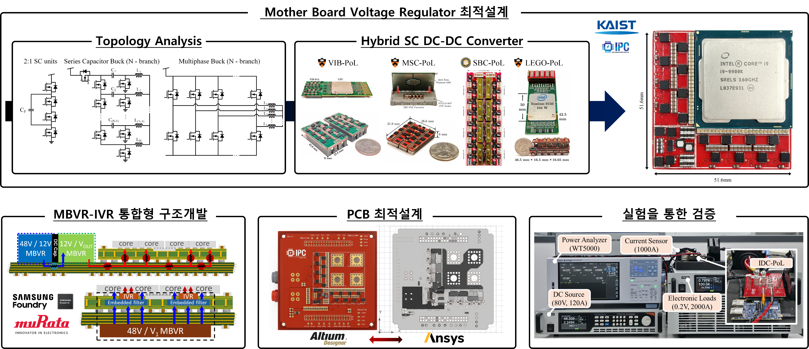

Power delivery architectures
Conversion from distribution buses to intermediate rails and point-of-load supplies near the processor.
KAIST INTEGRATED POWER CIRCUIT LAB
APPLICATIONS
Power delivery for AI processors and data centers
AI processors require large currents at low operating voltages. Efficient power delivery must connect the data-center supply to the processor while managing conversion losses, board area and rapidly changing loads.
Explore projects
RESEARCH OVERVIEW
Conversion from distribution buses to intermediate rails and point-of-load supplies near the processor.
Circuit structures that combine capacitive energy transfer with inductive or transformer-based conversion.
Coordination of converter topology, PCB layout and packaging to reduce the space occupied by power delivery.
RESEARCH IN PROGRESS
Project snapshot · June 2026
PROJECT 01
Research partners
This project studies hybrid switched-capacitor (SC) architectures for both 48 V-to-1 V point-of-load conversion and conversion from an 800 V DC distribution bus. The research links circuit selection to integration around the processor.
Compare hybrid SC topologies and investigate integration of motherboard voltage regulators with regulators close to the processor.
Explore combinations of switched-capacitor and transformer stages, including how the voltage conversion ratio is divided between stages.
Use modeling, PCB design and experimental evaluation to compare candidate implementations.
